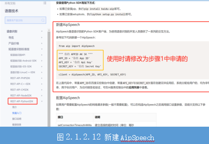

任务2.1.2 语音转文字#
学习目标#
1.知识目标
（1）掌握利用官方文档调用api的方法。
（2）理解语音转文本asr方法中参数的意义。
（3）理解转换后的数据字典文件信息。
2.能力目标
（1）能调用api将本地的语音文件转换成文本信息数据字典。
（2）能从数据字典中获取文本的内容。
3.素质素养目标
（1）培养遵守规范的意识；
（2）培养学生人文关怀的意识；
（3）培养学生技术服务的意识。
知识链接#
一、语音识别概念
语音识别，又称为自动语音识别(Automatic Speech Recognition，ASR)、语音转文本（Speech to Text，STT），其核心任务就是将人类的语音转换成对应的文字，让机器“听懂”人类的语音。语音识别技术的出现为人机交互的发展提供了新的方向。随着人工智能的发展，智能语音功能早已在车载、智能家居、手机端等场景中实现，语音对话机器人、语音助手、互动工具等智能产品也走进了人们的日常生活。
二、语音识别的原理
语音识别技术拆分下来，主要可分为“输入—编码—解码—输出”4个流程。 第1步：通过硬件输入声音信号，声音是一种波，其实就是输入一段声波文件。常见的音频文件mp3等格式都是压缩格式，必须转成非压缩的纯波形文件来处理，比如Windows PCM文件，也就是wav文件。wav文件里存储的除了一个文件头以外，就是声音波形的一个个点了，如图2.1.2.2所示。
第2步：将输入的音频进行信号处理，帧（毫秒级）拆分，图2.1.2.3中每个竖条是一帧，对拆分出的小段波形按照人耳特征变成多维向量信息，若干个帧信息识别成状态。这个过程叫做声学特征提取。
第3步：将第2步中的状态组合形成音素，通常3个状态组合成1个音素。
第4步：将音素组成字词并串连成句。 经过以上四个步骤就实现由语音转换成文字了。
三、语音识别技术#
1.端点检测
端点检测（Voice ActivityDetection，简称VAD），主要作用是区分一段声音是有效的语音信号还是非语音信号。VAD是语音识别中检测句子之间停顿的主要方法，同时也是低功耗所需要考虑的重要因素。VAD通常用信号处理的方法和基于机器学习的方法来做。
2.特征提取
特征提取就是把时域的声音原始信号通过某类方法提取出固定的特征序列，为训练声学模型准备输入。事实上深度学习训练的模型不会脱离物理的规律，只是把幅度、相位、频率以及各个维度的相关性进行了更多的特征提取。
3.声学模型
声学模型是语音识别中最为关键的部分，是将声学和计算机学的知识进行整合，以特征提取部分生成的特征作为输入，并为可变长的特征序列生成声学模型分数。声学模型核心要解决特征向量的可变长问题和声音信号的多变性问题。事实上，语音识别的发展基本上都是指声学模型的进展。声学模型迭代这么多年，已经有很多模型，比较有代表性的是高斯混合模型（GMM）、隐马尔可夫模型（HMM）和深度学习。
1）高斯混合模型（GMM）
高斯混合模型（英文Gaussian Mixture Model，GMM），是基于傅立叶频谱语音特征的统计模型，可以通过不断迭代优化求取GMM中的加权系数及各个高斯函数的均值与方差。GMM模型训练速度较快，声学模型参数量小，适合离线终端应用。深度学习应用到语音识别之前，GMM-HMM混合模型一直都是优秀的语音识别模型。但是GMM不能有效对非线性或近似非线性的数据进行建模，很难利用语境的信息，扩展模型比较困难。
2）隐马尔可夫模型（HMM）
隐马尔可夫模型（英文Hidden Markov Model，HMM），用来描述一个含有隐含未知参数的马尔可夫过程，从可观察的参数中确定该过程的隐含参数，然后利用这些参数来进一步分析。HMM是一种可以估计语音声学序列数据的统计学分布模型，尤其是时间特征，但是这些时间特征依赖于HMM的时间独立性假设，这样对语速、口音等因素与声学特征就很难关联起来。HMM还有很多扩展的模型，但是大部分还只适应于小词汇量的语音识别，大规模语音识别仍然非常困难。
3）深度学习
深度神经网络（英文Deep Neural Network，DNN），是较早用于声学模型的神经网络，DNN可以提高基于高斯混合模型的数据表示的效率，特别是DNN-HMM混合模型大幅度地提升了语音识别率。由于DNN-HMM只需要有限的训练成本便可得到较高的语音识别率，目前仍然是语音识别工业领域常用的声学模型。循环神经网络（RNN）和卷积神经网络（CNN）在语音识别领域的应用，主要是解决如何利用可变长度语境信息的问题，CNN/RNN比DNN在语速鲁棒性方面表现的更好一些。
4）语言模型
通过训练语料学习词之间的关系来估计词序列的可能性，最常见的语言模型是N-Gram模型。近年，深度神经网络的建模方式也被应用到语言模型中，比如基于CNN及RNN的语言模型。
5）解码搜索
解码是决定语音识别速度的关键因素，解码过程通常是将声学模型、词典以及语言模型编译成一个网络，基于最大后验概率的方法，选择一条或多条最优路径作为语音识别结果。解码过程一般可以划分动态编译和静态编译，或者同步与异步的两种模式。目前比较流行的解码方法是基于树拷贝的帧同步解码方法。
4.语音识别开源平台和开放平台
语音识别的开源平台很多，但是部署应用相当复杂，特别是基于深度学习的开源平台，需要大量的计算和数据以训练引擎，这个对于一般的用户来说也是一个非常高的技术门槛。因此对于一般的创业型公司来讲，显然自己部署语音识别引擎也不划算，而且语音识别技术需要强大的算力支撑，很难离线部署到本地进行应用开发。科大讯飞、百度等企业的开放平台提供了API免费供开发者使用，所以一般企业都选择开放平台的API进行语音识别产品开发。
1）Nuance NVP
Nuance是语音识别领域的老牌劲旅，除了语音识别技术外，还包扩语音合成、声纹识别等技术。Nuance Voice Platform(NVP)是Nuance公司推出的语音互联网平台，这是一个开放的、基于统一标准的语音平台产品。它能够支持客户公司已有的IT投资和基础设备，同时可以加入语音的应用。
2）Microsoft Speech API
微软的Speech API是微软推出的包含语音识别（SR）和语音合成（SS）引擎的应用编程接口，SAPI支持多种语言的识别和朗读，包括英文、中文、日文等。但是，微软总有个问题，就是任何一个产品都得和Windows绑定。
3）Google Speech API
语音识别领域自然不会少了苹果和谷歌两个大公司，但是虽然有这种大公司参与实际意义却不大。因为不管你的引擎多么优秀，语音识别最终是要基于云的，所以国内的众多创业用户根本用不了，甚至也访问不到。但是如果开发的产品主要部署在国外，Google Speech API可以备选的，因为这个API调用起来更加方便。
4）科大讯飞语音
科大讯飞1999年成立，作为中国最大的智能语音技术提供商，在智能语音技术领域有着长期的研究积累，并在中文语音合成、语音识别、口语评测等多项技术上拥有国际领先的成果。科大讯飞目前提供语音识别、语音合成、声纹识别等全方位的语音交互技术。目前也是国内创业团队使用最为广泛的开放语音识别平台。
5）百度语音
百度语音自从和中科院声学所合作以后，在贾磊带领下短时间内建立起来自己的引擎，而且打出了永久免费的口号，在很多领域抢占了一定的市场。 国内的语音识别开放平台还很多，和国外有所不同，国内开放的都是语音识别的专业公司，比如云之声、思必驰、捷通华声等。
四、语音识别实现#
语音识别技术需要强大的算力支撑，所以很难离线部署到本地进行应用开发，但是科大讯飞、百度等企业的开放平台提供了API免费供开发者使用。这里我们利用Python语言调用百度API实现将采集的语音文件转换成中文文本输出。
**步骤1：**进入百度AI官网（https://cloud.baidu.com），注册账号并领取语音识别服务资源，创建语音识别应用。
**1-1：**通过百度AI官网（https://cloud.baidu.com）首页右上角“免费注册”（见图2.1.2.4）进入用户注册页面（具体如图2.1.2.5所示），填写注册信息完成注册。
**1-2：**注册成功后请登录，单击页面右上角的“管理控制台”（如图2.1.2.6所示）进入管理中心页面，接着打开左侧产品服务列表，选择“人工智能-语音技术”（如图2.1.2.7所示），进入语音技术-概览页面，选择创建应用（如图2.1.2.8所示）。
1-3： 在创建应用页面（如图2.1.2.9所示）填写新应用的信息完成创建应用。创建成功单击左侧应用列表可以查看列表信息，包括应用的ID 、Key和SecretKey，这些信息后面调用API的时候需要用到。应用列表页面如图2.1.2.10所示。

**1-4：**在“语音技术-概览”页面领取语音识别和语音合成的免费资源额度，通过单击图2.1.1.11中方框标记的地方。
**步骤2：**安装python依赖包baiduaip和SpeechReconition。 前面已经安装过wave和pyaudion库了，此处我们就可以直接引用，但还需要安装baiduaip和SpeechReconition包，参考命令如下。
pip install baidu-aip
pip install SpeechRecognition
**步骤3：**学习百度的官方文档，根据官方文档简介和接口说明编写代码实现语音转文本功能。
**3-1：**新建AipSpeech对象。打开“语音技术-技术文档”页面，在左侧列表中选择“语音识别-短语音识别标准版”下的“Rest-API-PythonSDK”，这是Python语言开发的技术文档。在“快速入门”页面提供了新建AipSpeech的参考代码，如图2.1.2.12所示，其中的APP_ID、APP_KEY和SECRET_KEY就是步骤1中创建的应用中的信息，复制过来替换即可。

**3-2：**读取保存的语音文件并调用asr函数实现将语音文件转换为中文。asr函数中包括6个参数，前3个是必须要填写的，后3个选填。参考官方文档信息（详见图2.1.1.13），第1个参数是本地读取的语音文件（格式可以是pcm、wav、amr中的一种），第2个参数第一个参数中的语音文件格式（字符串格式）、第3个参数是语音文件采样率（只能是16000或8000，知道为什么我们在任务1中采集声音用16000的采样率了吗？）。除了这3个必须要填的参数，一般我们要转换成简体中文还需要添加dev_pid参数，参考示例添加方式为{ ‘dev_pid’: 1537,}。
**3-3：**编写代码，导入AipSpeech和speech_recognition，创建AipSpeech对象（client），代码参考图2.1.2.14图中马赛克部分为步骤1中创建的应用中对应的信息。
**3-4：**将任务1的录音功能封装到rec（）函数，代码参考图2.1.2.15，其中filePath为存储声音文件的路径和文件名。
**3-5：**调用录音函数录音并存储到filePath定义的路径文件中，这里我们将录音直接保存到当前目录下的recording.wav文件中。读取录音文件，然后调用百度api的asr方法，将录音转换成文本并存储到result。详细代码参考图2.1.2.16。
**步骤4：**从result中提取转换后的文本并输出到屏幕，代码如图2.1.2.17。
result是数据字典类型，图2.1.2.18中分别是成功返回和失败返回的样例信息，其中key为“result”中存储了语音转换后的文本内容，其中“result”的数据类型是列表，所以result[‘result’][0]就是我们语音对应的文本内容。
**步骤5：**在输出后文本后，播放录音进行校对。 支持python3的playsound模块可以很方便的播放wav、mp3等格式的音频文件，安装和import playsound模块后，利用playsound函数就可以了，如图2.1.2.19所示，这里的filePath就是保存的录音文件。 完成以上步骤后，电脑就可以实现让输入声音，输出你说话的内容文本和录音了，完整代码如图2.1.2.20。
完整流程#
**步骤1：**安装api、speechrecognition、playsound(注： 因playsound不稳定，已优化掉 )依赖库(注： speechrecognition与baidu-aip不是 Anaconda 默认的 channel 中可用的。要尝试在conda-forge channel中寻找，这个channel包含了更多的第三方库)。我们采用conda install命令方式(教室机使用pip很大概率无法安装，除非换源，所以推荐使用conda)，参考如下(安装库建议使用Anaconda Prompt，同时记得使用管理员模式打开，避免安装错误)
conda config --add channels conda-forge
conda install baidu-aip
conda install speechrecognition
**步骤2：**运行代码（已对图片里的代码进行优化，复制下列代码，在APP_ID、API_KEY和SECRET_KEY处填入你通过上述操作活动的字符串即可），完整代码如下：
from aip import AipSpeech
import speech_recognition as sr
import os
# from playsound import playsound
# import time
# 填写自己申请的语音识别应用ID，API KEY和SECRET KEY
APP_ID = '你的APP_ID'
API_KEY = '你的API_KEY'
SECRET_KEY = '你的SECRET_KEY'
file_path = 'recording.wav'
client = AipSpeech(APP_ID, API_KEY, SECRET_KEY) # 新建AipSpeech对象
# 录音
def rec():
rec_audio = sr.Recognizer()
with sr.Microphone(sample_rate=16000) as source:
print("请开始说话：")
audio = rec_audio.record(source, duration=10)
with open(file_path, "wb") as fw:
fw.write(audio.get_wav_data())
print("***录音结束***")
# 读取文件
def get_file_content(file_path):
with open(file_path, 'rb') as fp:
return fp.read()
rec() # 开始录音，持续10秒
# 识别本地语音文件，并保存到result.txt文件中
result = client.asr(get_file_content(file_path), 'wav', 16000, {'dev_pid': 1536, })
print(result)
if 'result' in result:
with open('result.txt', 'w') as f:
f.write(result["result"][0])
print("***语音转文字结束***")
else:
print("***语音转文字失败***")
# playsound('recording.wav')
os.system('start recording.wav')
【任务拓展】#
任务2中我们完成了普通话的文本转换功能。那么英语、四川话、粤语是否可以转换呢？我们一起来查看百度语音识别技术中的接口说明里面的dev_pid参数说明（见图2-1-29）。1537对应普通话，1637对应粤语，还可以对远场录音进行普通话文本转换。
素质素养养成#
（1）按照百度语音转文字技术文档要求准备语音数据、填写要求的参数过程中培养遵守规范的意识；
（2）语音转文本帮助人类更好的交流培养学生人文关怀的意识；
（3）方言转文本培养学生技术服务的意识。
任务实施#
任务工作单1：创建百度语音识别应用#
组号：__________ 姓名：__________ 学号：__________ 检索号：__________
引导问题：#
（1）进入百度AI官网（https://cloud.baidu.com），注册账号，利用注册账号登录。
—————————————————————————————————————————————————————————
（2）登录后创建语音识别应用，进入应用列表，获取语音识别应用。请截图展示你的应用信息。
—————————————————————————————————————————————————————————
（3）领取语音识别和语音合成资源。请截图展示成功领取的页面信息。
—————————————————————————————————————————————————————————
任务工作单2：创建AipSpeech对象#
组号：__________ 姓名：__________ 学号：__________ 检索号：__________
引导问题：#
（1）安装依赖包baiduaip和SpeechReconition。展示你的baiduaip和SpeechRecognition版本信息。
—————————————————————————————————————————————————————————
（2）导入AipSpeech和speech_recognition，创建AipSpeech对象保存为client。将完成的代码截图粘贴在下面。
—————————————————————————————————————————————————————————
任务工作单3：语音转文本#
组号：__________ 姓名：__________ 学号：__________ 检索号：__________
引导问题：#
（1）将录音功能封装到rec( ) 。
—————————————————————————————————————————————————————————
（2）你录音文件的存储路径保存到哪个变量？
—————————————————————————————————————————————————————————
（3）你录音文件保存的文件名是什么？
—————————————————————————————————————————————————————————
（4）读取录音文件，然后调用百度api的asr方法，将录音转换成文本并存储到result。请问你用print输出result的结果是什么？
—————————————————————————————————————————————————————————
任务工作单4：提取转换后的文本信息#
组号：__________ 姓名：__________ 学号：__________ 检索号：__________
引导问题：#
（1）百度语音转文本样例中失败和成功的结果分别是什么类型？内容分别是什么？
—————————————————————————————————————————————————————————
（2）百度语音转文本样例中要获取成功结果中的“北京天气”文本应该如何引用？
—————————————————————————————————————————————————————————
（3）从你完成的任务3的result中提取录音内容的文本信息并输出结果。结果请截图。
—————————————————————————————————————————————————————————
（4）在输出后文本后，播放录音进行校对。你怎么实现的？
—————————————————————————————————————————————————————————
任务工作单5：方言转文本#
组号：__________ 姓名：__________ 学号：__________ 检索号：__________
引导问题：#
（1）请问百度语音识别技术中的接口说明里面的dev_pid参数的作用是什么？
—————————————————————————————————————————————————————————
（2）普通话和粤语与哪个参数对应？参数值分别是什么？
—————————————————————————————————————————————————————————
（3）请录一段粤语（或者其他可以识别的方言）“奋斗的青春最美丽！”去转换为文本试试，截图你的程序运行结果，如果成功了请录制展示视频。
—————————————————————————————————————————————————————————
任务工作单6：语音转文本优化（讨论）#
组号：__________ 姓名：__________ 学号：__________ 检索号：__________
引导问题：#
（1）小组交流讨论，确定语音转文本功能完整流程和每个环节的实现方法。？
—————————————————————————————————————————————————————————
（2）请记录自己在进行语音转文本功能过程中的错误。
—————————————————————————————————————————————————————————
任务工作单7：语音转文本过程优化（展示）#
组号：__________ 姓名：__________ 学号：__________ 检索号：__________
引导问题：#
（1）每小组推荐一位小组长，汇报任务1-任务5的实现过程，借鉴各组分享的经验，进一步完善实现的步骤。
—————————————————————————————————————————————————————————
（2）检查自己不足的地方。 —————————————————————————————————————————————————————————
任务工作单8：语音转文本方案实施#
组号：__________ 姓名：__________ 学号：__________ 检索号：__________
引导问题：#
（1）按照正确的流程和实现方法，实现一边录音一边输出录音的文本内容，同时播放你的录音进行校对。
—————————————————————————————————————————————————————————
（2）自查语音转文本中出现的错误及原因。 —————————————————————————————————————————————————————————